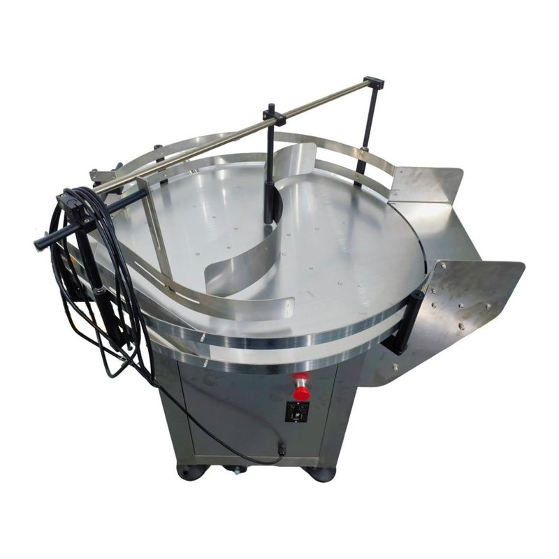
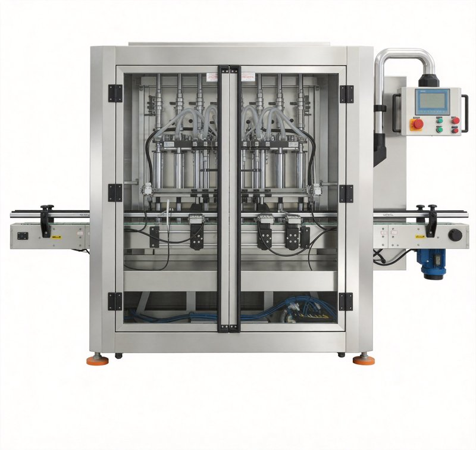
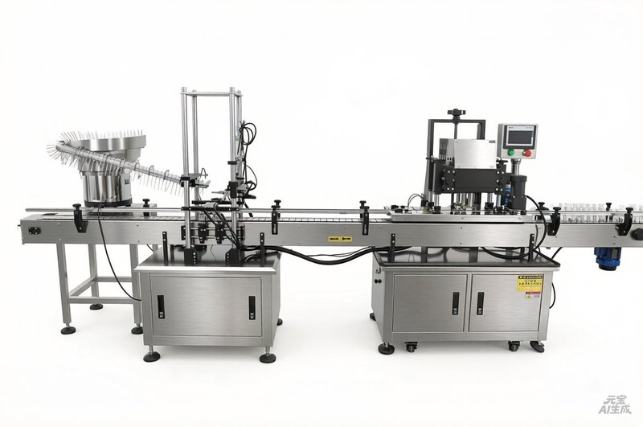
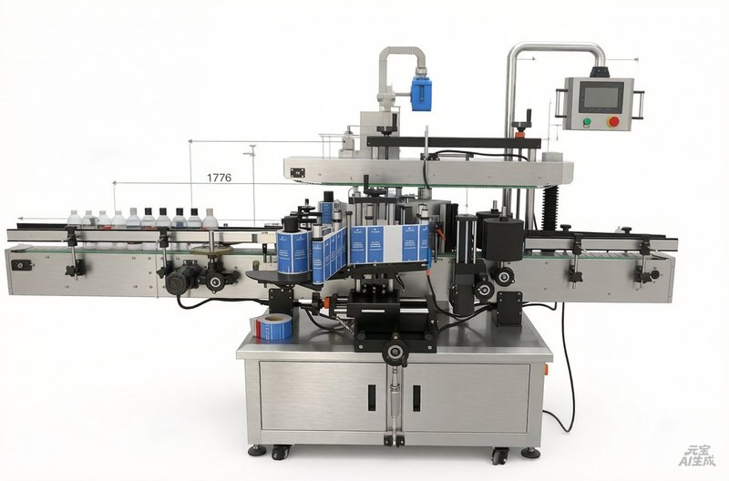
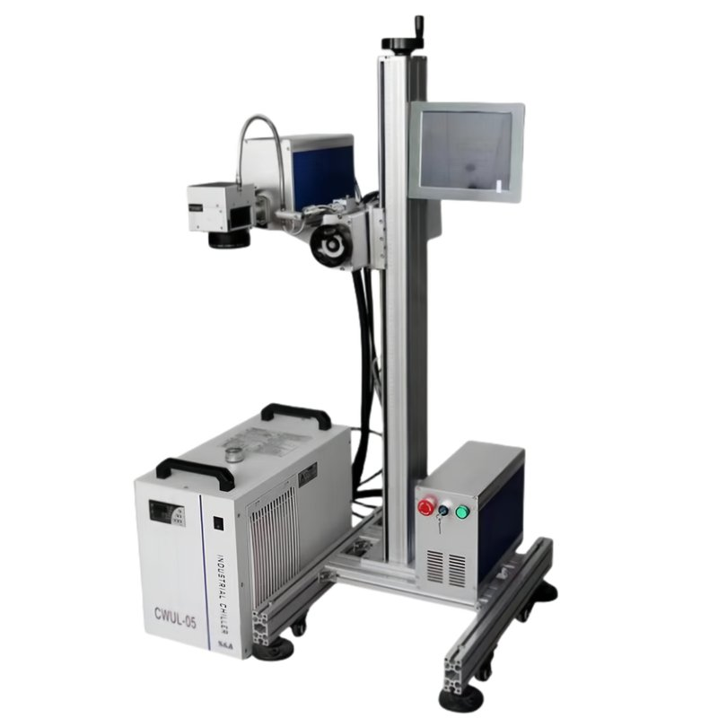
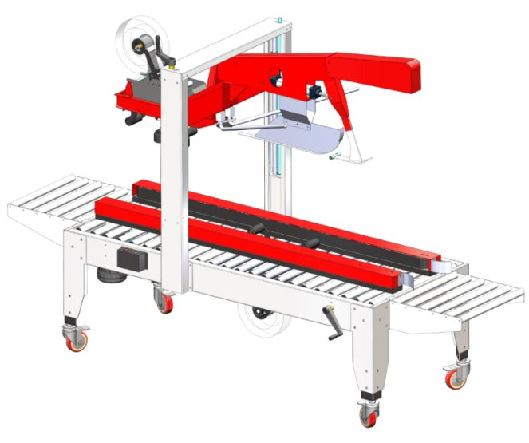
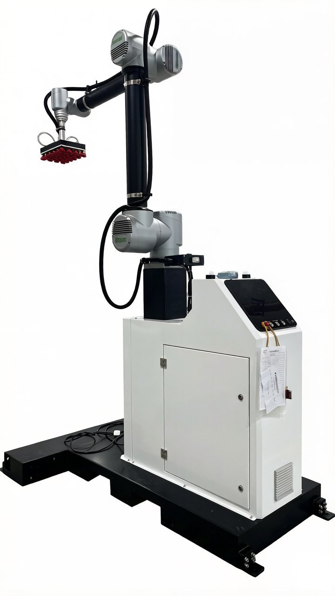

Bottle Unscrambler
Automatically rights, orients and feeds empty bottles into the production line. Handles 200ml–5L round, square, oval bottles. Pneumatic or servo-driven.
Used in: Bottle Detergent Line
Every machine in the packaging line, designed for liquid detergent production. Each piece can be purchased as part of a complete line or as a standalone upgrade.

Automatically rights, orients and feeds empty bottles into the production line. Handles 200ml–5L round, square, oval bottles. Pneumatic or servo-driven.
Used in: Bottle Detergent Line

High-precision servo-driven piston filler. Anti-foam filling, no-bottle-no-fill protection. Accuracy ±0.5%. Viscosity up to 2000 cps (heated option for higher).
Used in: Bottle Line · Drum Line

Torque-controlled capping for screw caps, pump caps, trigger caps, flip-top caps. Torque range 0.5–8 N·m. Rejection rate <0.1%.
Used in: All Lines

High-speed wrap-around, front-back, and top labeling. Accuracy ±1mm. Supports OPP, PVC, PE, and paper labels. Quick format changeover within 30 minutes.
Used in: Bottle Line · Drum Line

300 DPI resolution for batch numbers, production dates, expiry dates, QR codes, and barcodes. Compatible with plastic, glass, metal, and paper packaging.
Used in: All Lines

Automatic loading of bottles/pouches/drums into cartons or corrugated cases. Paired with H-type carton sealer. 10–60 cases/min speed range.
Used in: All Lines

Collaborative or 4-axis industrial palletizer. Payload 10–200kg. Palletizing height up to 2,000mm. Reduces labor costs by 60–80%.
Used in: All Lines
Bag-in-box (BIB) filling for large-volume institutional and industrial detergent packaging. Sanitary design, easy cleaning, suitable for viscous products.
Used in: Pouch Line
Request detailed technical sheets for any equipment, or get a complete line quote.
Technical questions about our standalone filling, capping, and labeling machines.
Servo filling machines use servo motors for precise volume control (±0.5% accuracy), ideal for high-value products. Pneumatic systems are more cost-effective for low-viscosity products with ±1% accuracy. We help you choose based on product value, viscosity, and production volume.
Yes. Our capping systems support screw caps, press caps, pump caps, and trigger sprayers. Quick-change cap-sorting bowls allow format changeover in under 15 minutes. We also offer ROPP (Roll-On Pilfer-Proof) capping for tamper-evident applications.
Our systems support wrap-around, front-and-back, top, and three-sided labeling with options for paper labels, clear BOPP, and shrink sleeves. Servo-driven label heads achieve ±0.5mm placement accuracy at speeds up to 200 BPM.
Most customers achieve ROI within 18–24 months. Savings come from labor reduction (typically 4–8 operators per shift), reduced product giveaway (1–3% improvement in fill accuracy), and increased throughput (2–4× manual production). We provide an ROI calculator with each quotation.
Yes. We offer semi-automatic filling and capping machines for production volumes under 1,000 units/day. These are popular with startups and contract manufacturers who plan to scale to full automation within 2–3 years.